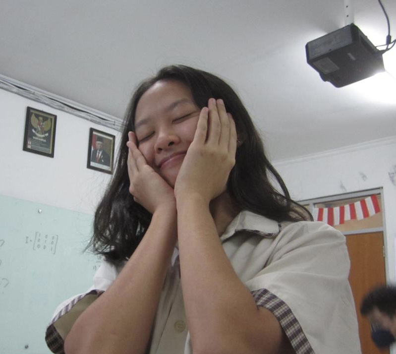

My Teams
Kimberly
She is good at drawing
Helena
She is good at make up

Valencia
she is a fast learner

Ryanto
He like playing valorant
Angel
She has a good taste in fashion
hello, my name is jesslyn laurentzia. you can call me jess, jejes, or anything u like. I was born on August 11, 2006. I'm 16 years old and now I'm in 11th grade. I study at Mutiara Bangsa 2, I've been studying here since 2nd grade. My hobby is watching, I like watching Korean dramas, Chinese dramas, Netflix series, and etc. I also like to cook, usually I will cook the food I want to eat. I used to see the recipe on the internet. Besides those two things, there are other things that I like, namely kpop. I just started liking kpop since entering the pandemic period. at that time I felt bored and started following kpop. The first kpop group I liked was EXO, then I started getting to know other groups and also watching Korean dramas which I still like to this day.
Download CVCooking is one of my specialties. I'm pretty confident in my cooking, but still nervous if someone wants to try it. I used to cook the food I wanted to eat, I saw the recipe from the internet and followed it. not infrequently my cooking failed, sometimes salty, sometimes burnt and other failures. Even so, I still love to cook.
Talking about studying, I don't really like studying but I can say that my grades are pretty good. Usually I study the day before the test, it's in a hurry but I understand the material better if I use this method. Even though I used to study the day before the test, I was never late for assignments and rarely got remedial.
I can understand the language, there is Indonesian, English, Mandarin and a little bit of Korean. I studied English and Mandarin since elementary school until now in high school, while for Korean I studied it while watching Korean dramas. I'm not very fluent when it comes to speaking but if I listen I can understand enough.
In this section I will explain each and every thing I write here, from cooking to listening. Like I said earlier, I like to cook. I could say my cooking skills are pretty good, but I'm not very confident when it comes to cooking for other people. when it comes to sports, I don't really like it when I have to do sports that involve a lot of running. But I can play basketball quite well, I also like volleyball but I can't really play it. Next reading, I quite like reading if what is read is a novel, especially romance novels. it's just that if I have to read about lessons, I'm a little lazy to do it. When it comes to studying, I'm pretty confident about this. I have pretty good grades and I'm a fast learner.
Read MoreShe is good at drawing
She is good at make up
she is a fast learner
He like playing valorant
She has a good taste in fashion
I live in the Tangerang area, specifically in the Alam Raya housing estate. I've lived here for about 10 years, since i was in 2nd grade. I don't really know my neighbors because i rarely go out, but there is some neighbors that i know just not many. There are Indomart and Alfamidi inside Alam Raya, so if i craving for some snacks or drinks i can go there.